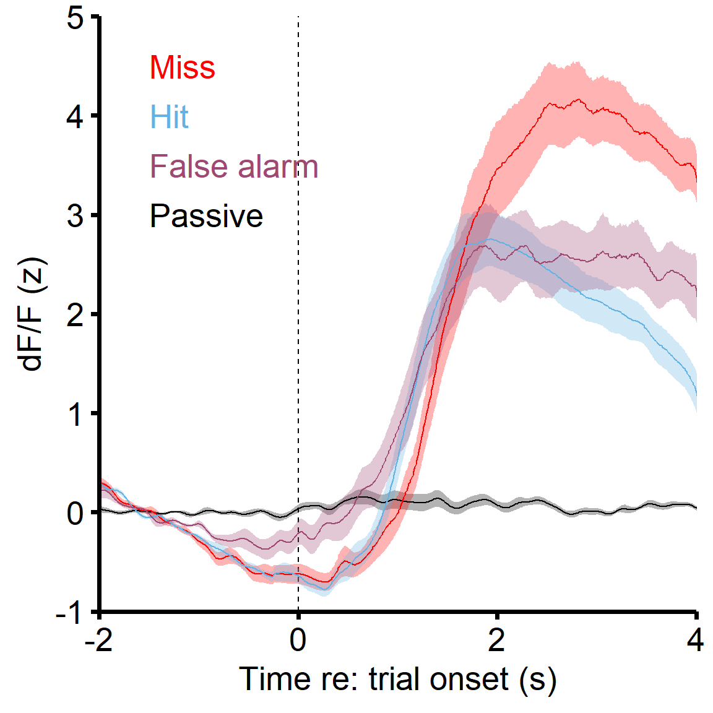

library(ggplot2)
library(dplyr)
library(tidyr)
# install.packages(c('remotes', 'TMB'))
# remotes::install_github("glmmTMB/glmmTMB/glmmTMB", build_vignettes=FALSE)
library(glmmTMB)
library(DHARMa)
library(car)
library(reshape2)
library(emmeans)
library(rcompanion)
# Create the notin operator
`%notin%` <- Negate(`%in%`)
# Some global plot parameters if modification is needed.
source('./r_theme.r', echo=F)
theme_set(theme_mml(base_size = 20))
LINE_THICKNESS = 1
ERRORBAR_THICKNESS = LINE_THICKNESS/2
INDIVIDUAL_DATAPOINT_LINE = LINE_THICKNESS/1.5
SMALL_PLOTS_LINE_THICKNESS = LINE_THICKNESS/3
df_grouped = read.csv('./Data/Photometry/AAVrg_GCaMP8s-ACx_fiber-OFC_meanZscore.csv')
df_grouped$Trial_type = factor(df_grouped$Trial_type, levels=c('Passive', 'Miss (shock)', 'Hit (shock)', 'False alarm'))
graph_data = df_grouped
plot_colors = c('black', 'red', '#64B2E3', '#9F4871')
y_axis = seq(-1, 5, 1)
x_axis = seq(-2, 5, 2)
p = ggplot(data=graph_data, aes(x=Time_s_round, y=Signal_mean, color=Trial_type, group=Trial_type, fill=Trial_type)) +
geom_vline(xintercept=0, linetype='dashed') +
stat_summary(fun.data = mean_se, geom = "ribbon", na.rm = T, alpha=0.3, color=NA) +
# stat_summary(fun="mean", geom="bar", na.rm = T, alpha = 1, color='NA') +
stat_summary(fun="mean", geom="line", na.rm = T, alpha = 1, size=LINE_THICKNESS/2) +
scale_fill_manual(values=plot_colors, name='') +
scale_color_manual(values=plot_colors, name='') +
annotate("text", x=-1.5, y=4.5, label='Miss', color=plot_colors[2], size=7, hjust=0) +
annotate("text", x=-1.5, y=4, label='Hit', color=plot_colors[3], size=7, hjust=0) +
annotate("text", x=-1.5, y=3.5, label='False alarm', color=plot_colors[4], size=7, hjust=0) +
annotate("text", x=-1.5, y=3, label='Passive', color=plot_colors[1], size=7, hjust=0) +
theme(legend.position = 'none') +
scale_y_continuous(breaks=y_axis, expand=c(0, 0)) +
scale_x_continuous(breaks=x_axis, expand=c(0, 0)) +
coord_cartesian(ylim = c(min(y_axis), max(y_axis)),
xlim = c(min(x_axis), max(x_axis))) +
ylab('dF/F (z)') +
xlab('Time re: trial onset (s)')
p
You can find this code here